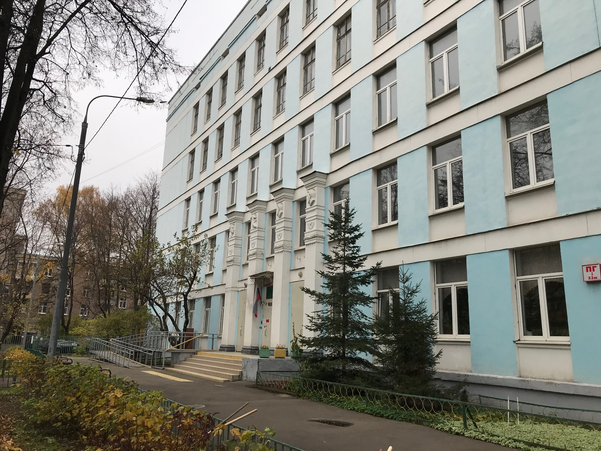
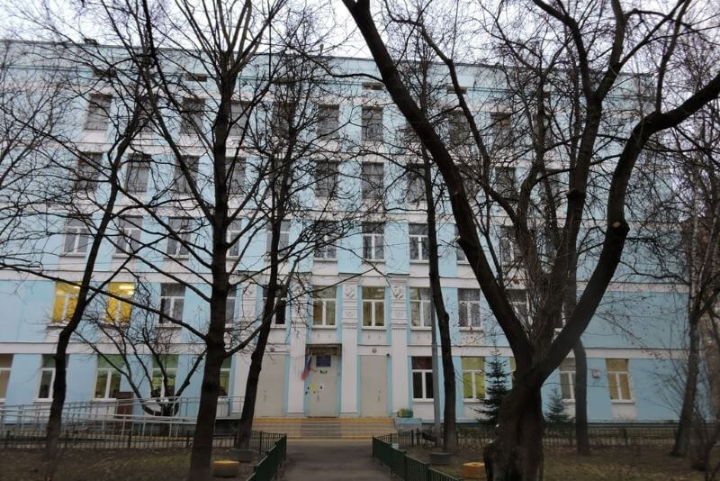
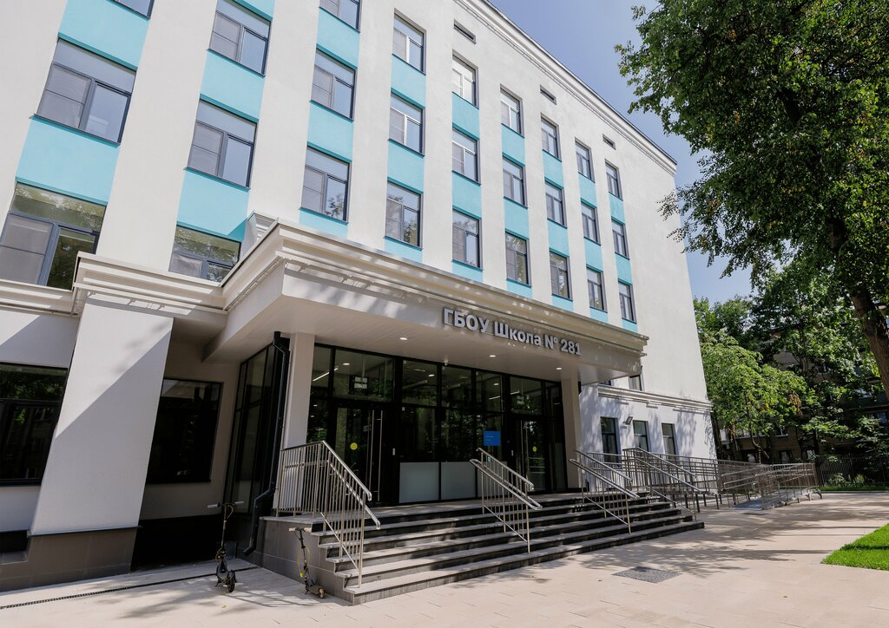
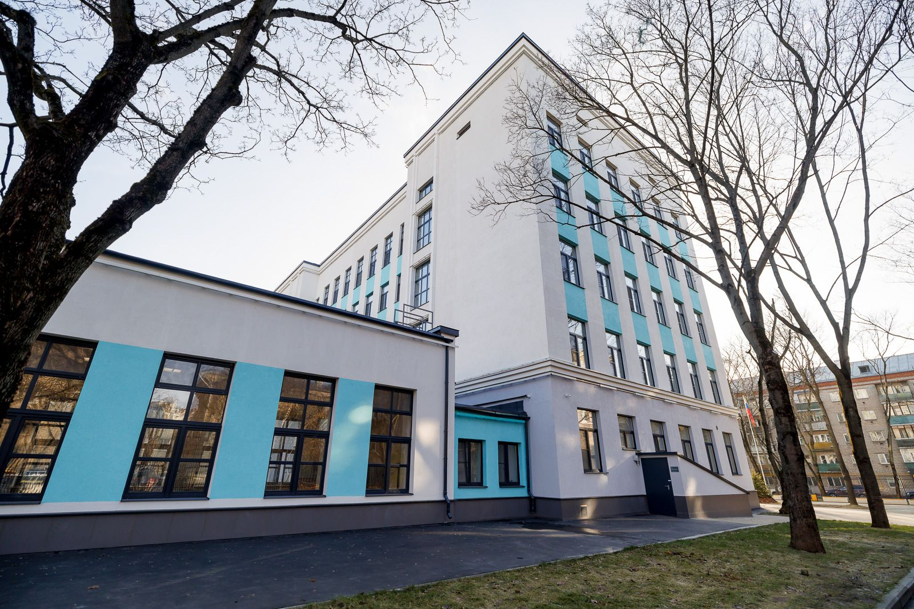

История здания
Корпус на ул. Коминтерна, д. 4, корп. 1
Корпус школы № 281 (ранее школа № 1139) по адресу: улица Коминтерна, дом 4, корпус 1 в Бабушкинском районе Москвы (СВАО) — это типичное пятиэтажное школьное здание советского периода, построенное примерно в 1965–1966 годах (в 2025 году ему исполнилось 60 лет).
История корпуса
Здание возвели в эпоху массового жилищного и социального строительства в Москве, когда активно осваивались новые районы (Лосинка/Бабушкинский). Изначально это была самостоятельная средняя общеобразовательная школа № 1139.
В 2010-х годах её присоединили к школе № 281 как структурное подразделение (один из девяти корпусов большого школьного комплекса).
Корпус на Коминтерна, 4, к. 1 используется преимущественно для 7–11 классов (более 600 учеников). В 2023–2024 годах здание закрыли на капитальный ремонт и модернизацию по программе «Моя школа». Оно стало одной из четырёх пилотных школ в Москве, реконструированных по новому стандарту. После обновления корпус открылся в сентябре 2024 года.




← На главную